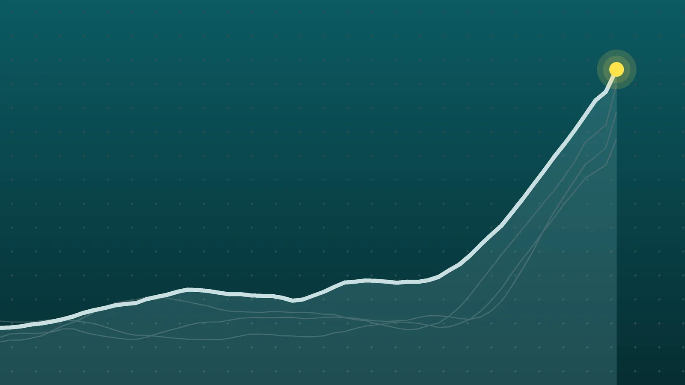

WorldExplainer
Serbia Election Results: Student List Wins as Vučić Concedes
A movement born from protests over the 2024 Novi Sad station collapse is on track for an outright majority in parliament, ending more than a decade of dominance by Aleksandar Vučić’s Progressive Party.

Quick take
- Preliminary results from Serbia’s electoral commission, with 8,077 of 8,392 polling stations processed, gave the Student List 52.54% and Vučić’s United Serbia 39.29%, Al Jazeera reported.
- Projections put the Student List at about 140 of 250 seats, above the 126 needed for a majority; Vučić’s list was projected at about 103 to 105.
- Turnout was 68.78%, the highest in more than 30 years, according to electoral commission data reported by Al Jazeera.
- A new parliament must convene within 30 days of final results, and a government must be formed within 90 days after that.
Why it's trending Aleksandar Vučić conceded Serbia’s Oct. 25 snap parliamentary election to the student-led Student List, which preliminary results put above 52%.
What happened
Serbia’s Student List, a political platform that grew out of almost two years of anti-corruption protests, won the country’s snap parliamentary election on Sunday, Oct. 25. Aleksandar Vučić, who has dominated Serbian politics since 2012, admitted defeat that night. Working from a sample count, he told the nation it was clear his side had lost, Euronews reported.
The official numbers that followed on Monday confirmed it. With 8,077 of 8,392 polling stations processed, the Republic Electoral Commission had the Student List at 52.54% and Vučić’s United Serbia list at 39.29%, Al Jazeera reported. That points to an outright majority in the 250-seat National Assembly, so the winners should not need coalition partners.
Turnout was 68.78%, the highest in more than three decades. The final result has not yet been certified.
Why this election matters
For more than a decade, Serbian elections followed one pattern: Vučić’s Serbian Progressive Party (SNS) won, often comfortably. The party took power in 2012, and Vučić served as deputy prime minister, then prime minister from 2014 and president from 2017, according to an Al Jazeera profile. He resigned the presidency on Sept. 27 and headed his party’s list as its candidate for prime minister.
This time the challenge came from outside the traditional opposition. The Student List ran 250 mostly unknown candidates, among them professors, actors and farmers, ABC News (Australia) reported. Its campaign was led by Ilija Srdanović, a cardiologist who teaches at the University of Novi Sad’s medical school.
Vučić did not go quietly in his remarks. He described the outcome as a revolution backed by European governments and what he called the U.S. “deep state,” Balkan Insight reported. The Council of Europe’s secretary general, Alain Berset, nonetheless welcomed his acceptance of the result and his commitment to a peaceful handover.
How we got here
| Date | Event |
|---|---|
| Nov. 1, 2024 | A train station canopy collapses in Novi Sad, killing 16 people |
| Late 2024 to 2026 | Student-led protests over corruption and accountability grow into a broad movement |
| Sept. 2026 | Vučić calls an early election; the next one wasn’t due until the end of 2027 |
| Sept. 27, 2026 | Vučić resigns as president to lead his party’s list |
| Oct. 25, 2026 | Snap election; Vučić concedes the same night |
| Oct. 26, 2026 | Preliminary official results: Student List 52.54%, United Serbia 39.29% |
The station disaster became a symbol for protesters who accused the government of corruption and of hollowing out independent institutions. Vučić called the demonstrators “blockaders” and accused them of trying to destabilize the country.
The numbers
| Measure | 2023 election | 2026 election (preliminary) |
|---|---|---|
| Vučić’s list, share of vote | 48.07% | 39.29% |
| Vučić’s list, seats | 129 | about 103 to 105 |
| Winning list’s seats | 129 (SNS-led list) | about 135 to 140 (Student List) |
| Seats needed for majority | 126 | 126 |
The 2023 figures are from Wikipedia’s election page; 2026 projections are from Vučić’s own estimate, a CESID-IPSPS projection and the electoral commission’s count as reported by Al Jazeera and ABC.
What the math says
- The cushion: At 140 seats, the Student List would hold 14 more than the 126 needed to govern alone. Even at the low end of Vučić’s estimate, 135, it would still have nine to spare.
- The fall: Vučić’s list dropped about 8.8 percentage points from its 2023 share and would lose roughly two dozen seats.
- The gap in votes: Euronews put the Student List at about 2.2 million votes and the SNS at about 1.72 million, a margin of roughly 480,000.
- Who else is in: Apart from the two big lists, only ethnic minority parties won seats, including three for the Alliance of Vojvodina Hungarians. Serbia’s 3% threshold doesn’t apply to minority parties.
Who says what
- The winners: Radomir Sajčić, a Belgrade University professor speaking for the Student List, called the result a victory for the idea that Serbia “can and must be different,” per Balkan Insight.
- The EU: European Commission President Ursula von der Leyen offered support for reforms on the rule of law, media freedom and corruption. Enlargement Commissioner Marta Kos called it a turning point, Balkan Insight reported.
- Neighbors: Croatian Prime Minister Andrej Plenković congratulated Srdanović. Hungary’s Prime Minister Péter Magyar said he called the Student List’s leaders. Republika Srpska’s Milorad Dodik, a longtime Vučić ally, said close ties with Serbia would continue.
- Watchdogs: The monitoring group CRTA reported voter pressure and record levels of ballot photographing. The electoral commission’s president called most incidents minor.
What happens next
- Within 30 days of final results: The new National Assembly must convene, Al Jazeera explained.
- Within 90 days after that: A government must be formed. The Student List hasn’t named a prime minister; Srdanović is widely seen as the front-runner.
- By Dec. 27: Parliament Speaker Ana Brnabić, serving as acting president, must call a presidential election. The post is directly elected but largely ceremonial.
- Foreign policy: The new majority will have to balance the EU, Serbia’s biggest trading partner, with Russia, its main gas supplier, and China, a major investor, ABC reported. The students have said little so far on these questions.
Quick answers
Who won the Serbian election in 2026?
The Student List, a platform born from the student protest movement, with 52.54% in preliminary results. Vučić’s United Serbia list had 39.29%.
Did Vučić concede?
Yes. On election night he said a sample count made clear his side had lost. He also called the result a foreign-backed revolution.
Who will be Serbia’s next prime minister?
No one has been named. Ilija Srdanović, the cardiologist who led the Student List’s campaign, is seen as the most likely choice.
Sources
- Balkan Insight Serbian Strongman Vucic Concedes Defeat in Snap ElectionsOct. 25, 2026
- Euronews Student List wins Serbian election in political earthquake as Vučić concedes defeatOct. 25, 2026
- ABC News (Australia) Serbian president concedes defeat to student-led movement in electionOct. 26, 2026
- Al Jazeera Serbia after Vucic: Who will be PM and when will a government be formed?Oct. 26, 2026
- Al Jazeera Aleksandar Vucic, the Serbian leader brought down by studentsOct. 26, 2026
- Balkan Insight European Leaders Welcome Victory for Serbia's Opposition Student ListOct. 26, 2026
- Wikipedia 2026 Serbian parliamentary electionOct. 26, 2026
Keep reading

Israel Election Exit Polls: Likud Leads, but No Bloc Reaches 61
Israel election 2026 exit polls put Netanyahu’s Likud first with 24-25 seats, but neither his bloc nor Eisenkot’s reaches a 61-seat majority. What comes next.

UK Be Ready Checklist: Why Beans and Water Are Selling Out
The UK’s Be Ready campaign asks households to keep three days of supplies. Here’s what’s on the checklist and why beans, water and radios sold out.

Brazil Runoff Results: Lula Wins a 4th Term With 51.8%
Brazil runoff results: Lula beat Flávio Bolsonaro 51.8% to 48.2% on Oct. 25. See the vote math, why Bolsonaro wants the vote annulled and what comes next.